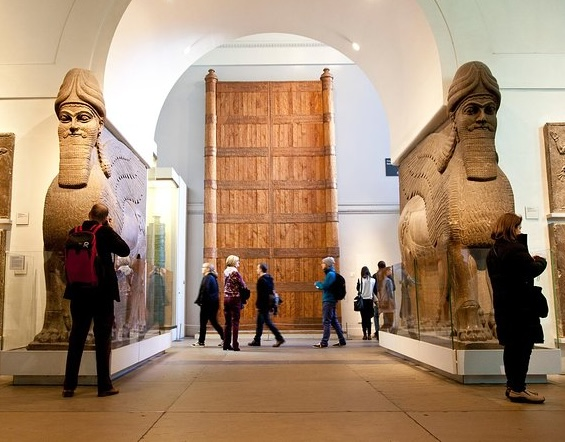

Prerequisites Knowledge
The prerequisite Python knowledge and practice for this micro-learning activity is as follows:
- Classes and objects
- Encapsulation
- Inheritance
- Polymorphism
- Method overriding
- Abstract classes and interfaces
Learning Overview
This session introduces Computer Science students to the Visitor Design Pattern centred on a London Museum collections management scenario, followed by a diagnostic workthrough and reflective discussion. The workshop is followed by formative exercises.
Learning Outcomes:
By the end of this learning activity, you should be able to:
- Workshop: Explain why the Visitor pattern is useful.
- Workshop: Implement a simplified visitor pattern for a given class.
- Seminar: Design and implement object-oriented Python solutions and the Visitor Pattern to address a range of software development problems.
- Seminar: Evaluate the maintainability and extensibility of alternative object-oriented designs, justifying when the Visitor Pattern is an appropriate solution to evolving software requirements.
Activities
Starter Activity: Scenario based problem
Imagine you've just joined a software consultancy in London. One of your first clients is the British Museum (Bloomsbury area, London), around 3.5 miles from Northeastern University London. The museum is investing heavily in digital experiences and has thousands of assets including:
- Historical artefacts
- Paintings
- Interactive digital exhibits
- Roman archaeology collections

Initial Discussion
In pairs, discuss the programmatic structure you could use to represent each element of the scenario.
- Management wants:
- Ticket reporting
- Insurance valuation
- Accessibility auditing
Micro-Task (Experience the problem yourself!)
In pairs, complete the below:
- The London Museum wants to calculate the annual insurance value of its exhibits.
- Implement the insurance calculation
- The museum's accessibility team now wants an accessibility score for every exhibit.
- The sustainability team wants a carbon footprint score.
- The insurance policy has changed. The values need updating.
The Visitor Pattern: Overview
The visitor pattern is a behavioral design pattern that separates an algorithm from the object structure it operates on, enabling the addition of new operations to existing classes without modifying their code. It achieves this via double dispatch, allowing the executed method to depend on both the visitor type and the element type.
- Reflection: Problems it helps to overcome
- When is it acceptable to not use the visitor pattern?
- VS Code Demo
Experimentation! (Work through a problem!)
In pairs, work through the provided worksheet to implement (pseudocode) a new accessibility requirement, and further extension questions.
Reflection (on the learning!)
Reflection on uses of the visitor pattern.
Lesson Resources
Download the lesson resources below:
Student Worksheets (PDF) (docx)
Example Python Code (ZIP)
Formative Exercises (ZIP)
Video Recap
EMBED VIDEO HERE
Formative Exercises
The following challenges present a series of scenarios, designed to test your knowledge, understanding, problem-solving, and interpretation of the Visitor Pattern, as a behavioural design pattern that can be implemented in Python. Complete the warm-up challenge, and then work your way through to the advanced challenge, with further extensions available as part of the expert challenge. All students are expected to complete to the end of the advanced challenge section. Submission of code and other associated material is available through Canvas.
You are part of a game development team creating Legends of Eldoria, a fantasy role-playing game set in a medieval kingdom filled with heroes, magic and adventure. Players can recruit different character types into their party. Each character has unique strengths and abilities that make them valuable during battles, quests and tournaments. Your development team has created several character classes, each representing a different type of hero that players can encounter throughout the game. The game currently contains the following playable characters.
1. Sir Cedric the Knight: Sir Cedric is a heavily armoured warrior who protects allies and excels in close combat. Knights in the game are designed to withstand significant damage whilst dealing powerful physical attacks. Sir Cedric has the following properties:
Name: Sir Cedric
Health: 100
Strength: 85
Armour: 90
Years of Service: 12
These properties help determine how effective a Knight is during battles, defensive missions and kingdom wars.
2. Robin Oakwood the Archer: Robin is a skilled ranger capable of attacking enemies from long distances. Archers rely on precision and agility rather than armour. Robin has the following properties:
Name: Robin Oakwood
Health: 80
Accuracy: 95
Agility: 90
Attack Range: 75
These attributes influence hit probability, movement speed and ranged damage calculations.
3. Merlin the Wise: Merlin is one of the kingdom's most powerful spellcasters. Wizards use magical abilities rather than physical strength to overcome challenges. Merlin possesses:
Name: Merlin the Wise
Health: 60
Mana: 120
Intelligence: 100
Spell Power: 95
These values affect spell effectiveness, mana consumption and magical combat performance.
4. Sister Elara the Healer: Sister Elara accompanies adventuring parties, restoring health and supporting allies through healing magic. She has the following properties:
Name: Sister Elara
Health: 70
Faith: 90
Healing Power: 95
Compassion: 100
These values affect spell effectiveness, mana consumption and magical combat performance.
5. Shadow Fox the Rogue: Shadow Fox is a stealth specialist who excels at infiltration, treasure hunting and surprise attacks. The Rogue possesses:
Name: Shadow Fox
Health: 75
Stealth: 95
Dexterity: 90
Lockpicking Skill: 85
These statistics influence sneaking, critical hit chances and the ability to unlock hidden areas within the game.
Your Task:
1. Construct an appropriate class structure that allows each character to be represented, and instantiated as an object in a main method.
2. Ensure each character has a suitable to-string method for ease of printing to the terminal
3. Ensure each class is well documented with appropriate use of doc-strings.
4. Add a Unique Special Ability for each class. For example; 'shield wall', 'rapid shot', 'cast spell', etc... these abilities need only return a string.
E.g., "Sir Cedric raises a shield wall!"
5. The game designers would like a Battle Rating score for every character. Implement a calculate_battle_rating() method, as below:
- Knight: Strength * 0.5 + Armour * 0.3 + Experience (Years of Service) * 2
- Archer: Accuracy * 0.4 + Agility * 0.4 + Attack Range * 0.2
- Wizard: Intelligence * 0.4 + Spell Power * 0.4 + Mana * 0.2
- Healer: healing Power * 0.5 + Faith * 0.3 + Compassion * 0.2
- Rogue: Stealth * 0.4 + dexterity * 0.4 + Lockpicking Skill * 0.2
6. Reflective Questions:
- Why did we choose to represent each hero as a class rather than using a list of dictionaries?
- Which attributes are common across all characters?
- Could a parent class named Character reduce code duplication? Explain your reasoning.
- If the game developers wanted a "Battle Rating" feature for every character, where would you add that functionality? Explain your reasoning.
The development team behind Legends of Eldoria has released the game and it has become an enormous success.
Unfortunately, every few weeks the game designers request a new scoring system for all characters.
The team has already implemented a BattleRatingVisitor, but now additional gameplay systems are being introduced.
1. Implement a Tournament Visitor
The Esports Team would like a Tournament Score for every character.
Create a new visitor called:
TournamentVisitor
Assign the following scores:
Knight = 75
Archer = 90
Wizard = 85
Healer = 60
Rogue = 95
Implement the required visitor methods and test them against your character classes.
2: Implement a Magic Affinity Visitor
The game balancing team now requires a new system that measures each character's magical potential.
Create:
MagicAffinityVisitor
Design your own scoring system between 0 and 100.
Consider:
- Wizards should score highly.
- Healers should score reasonably well.
- Knights and Rogues may have lower magical ability.
3: Character Analysis
Using both visitors, determine:
- Which character has the highest Tournament Score?
- Which character has the highest Magic Affinity?
- Which character performs best overall?
Display your results in the terminal.
4: Compare Approaches
Before implementing visitors, you added functionality directly into the character classes.
Consider the following new requirements:
- Battle Rating
- Tournament Score
- Magic Affinity
- Quest Reward Rating
- Legendary Hero Score
Consider the following questions:
- How many character classes would need to change?
- Would the character classes become larger over time?
- Which approach is easier to maintain?
5: Software Engineering Reflection
Complete the following questions:
- What problem does the Visitor Pattern solve in Legends of Eldoria?
- What part of the game remains relatively stable?
- What part of the game changes frequently?
- How does the Visitor Pattern support maintainability?
- How does it support the Open/Closed Principle?
Stretch Challenge (Optional)
The game designers introduce a brand new character type:
Dragon Rider
The Dragon Rider contains:
Health
Dragon Strength
Flying Speed
Combat Experience
With another student, discuss:
- What changes would be required to your Visitors?
- Would the Visitor Pattern still be a good choice?
- What limitation of the Visitor Pattern does this demonstrate?
Expert Challenge 1: Dynamic Character Ranking System
The game directors want to introduce a global player leaderboard that combines multiple scoring systems.
Create a new visitor:
CharacterRankingVisitor
This visitor should calculate an overall ranking score using:
- Battle Rating
- Tournament Score
- Magic Affinity
You may decide how these scores are weighted.For example:
Final Score =
(0.5 * Battle Rating) +
(0.3 * Tournament Score) +
(0.2 * Magic Affinity)
Once implemented:
- Rank all characters from highest to lowest score.
- Display the leaderboard in the terminal.
- Identify the strongest overall character.
Reflection Questions
- Would it have been easy to implement this feature without the Visitor Pattern?
- How many existing classes needed modification?
- What benefit was gained by reusing information from existing visitors?
- Could the ranking algorithm be changed later without altering character classes?